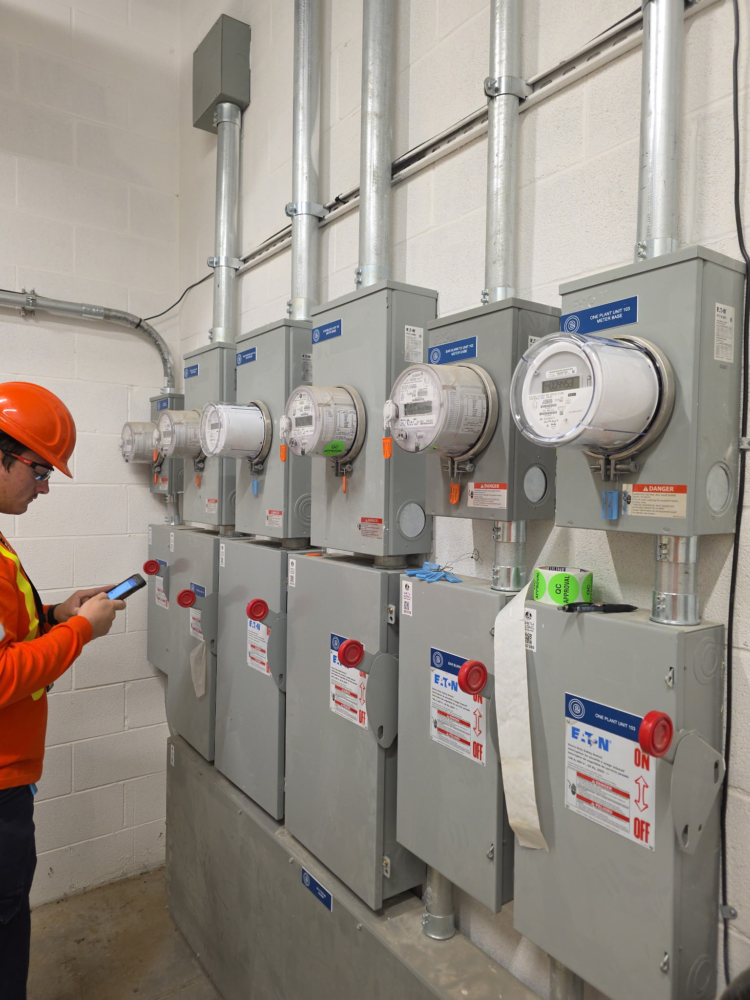
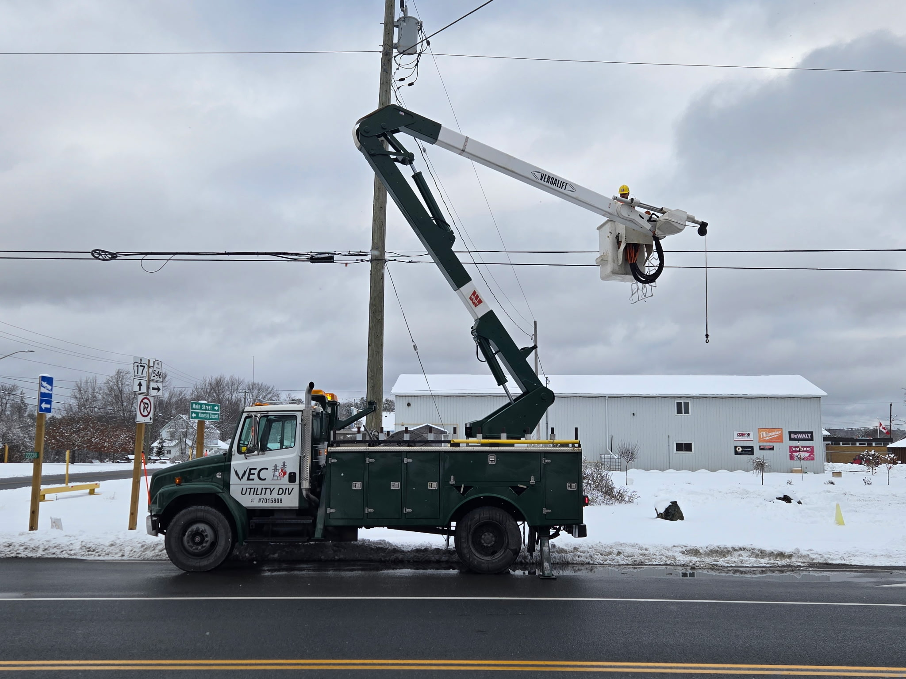
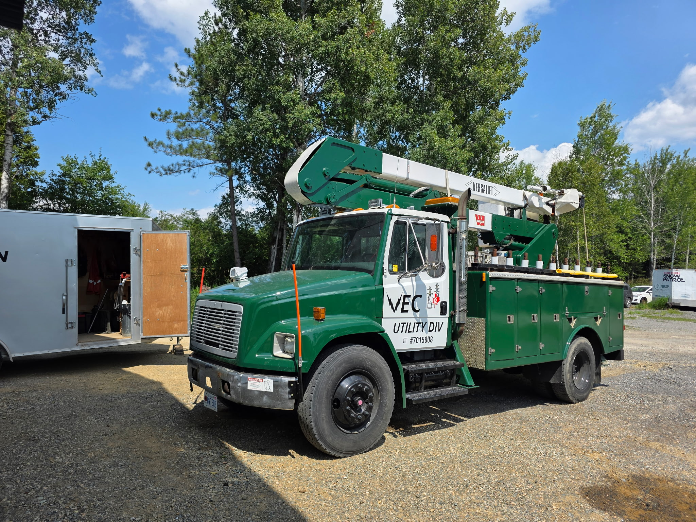

Infrastructure • Field Support • Northern Ontario
Utility Division
Veteran Electric’s Utility Division supports critical electrical infrastructure projects across Northern Ontario with dependable crews, disciplined execution, and a strong safety-first work culture.


Built for Demanding Utility Environments
Utility work requires planning, communication, site awareness, and crews that understand the importance of safety, scheduling, and consistency.
Utility Infrastructure Services
Substation Maintenance
Planned and ongoing substation maintenance and electrical support.
Energy Metering
Metering installation, maintenance, and field support services.
Power Line Construction Support
Field support and coordination for utility infrastructure projects.

What We Bring to Utility Projects
Supporting Northern Ontario Infrastructure
Veteran Electric supports utility infrastructure work with dependable crews, disciplined field execution, and a practical, safety-first approach.
Request Utility Division Information
Send us a message below.